Who: Sofia Okafor, a student at Chapel Hill Math Institute (CHMI). Her profile has her at Culbreth Middle, in Grade 7 Mathematics. Her tutor is Alex, and she has a weekly lesson on Tuesdays at 4:00 PM. She belongs to cohort C5, the tutored student ("What do I have to do?") in docs/member-home-plan.md. She is a seeded person. Her centre made her account, so she arrives signed out on the shared address. Her goal is to practise before her next lesson.
Outcome: 1/1 journeys passed, 0 skipped, 16 of 16 steps verified. Sofia signed in and landed in CHMI with no chooser and no wizard (step 3). The home leads with the Daily: the Next up card "Today's 5". One tap opened its first question (step 5). The journey also records the other two practice routes:
An assessment waiting for her: none. Her Assessment page says "No assessments yet". The home's quick action
"Start an assessment" opens that page in one tap (step 10). Starting one needs a level (22 choices) and Start.
"Practise before Tue's lesson": not offered. Her lesson is six days away, and the home offers it only within
three days (PRACTISE_BEFORE_DAYS). Nothing else on the home leads to practice for the lesson. Tapping the lesson line does nothing (step 11).
The journey ran to its end, but the practice it started is wrong for her. The Next up Daily is Grade 3 (step 5). The Quest board's own Daily on the same home is Grade 1 (step 12). Her profile says Grade 7 (step 15). She can choose 7 on the grade row, but only the board follows. After a reload, the board is back on Grade 1 (steps 13-14).
Conversion figures (counted from the entry point):
Stretch
Screens
Taps
Typed fields
Waits
Dead ends
Entry to the Daily's first question (steps 1-5)
4
3 (+1 optional: No thanks on the tour offer)
0
0
0
Home to the assessment start page (step 10)
1
1 (then level, choice and Start: 3 more to begin)
0
0
0
Home to "Practise before"
not offered
—
—
—
1 (the lesson line, step 11)
Whole run, 16 steps
10 distinct
20
0
0
2 (lesson line, menu Quest)
For conversion, Sofia is in her space and playing within three taps of the guest page, which is excellent. For stickiness, the habit layer is in place: the streak card ("Start a streak, 0 of 3 days this week") and the next badge. But the practice it counts is four to six grades below her. Nothing links it to Tuesday's lesson, the reason she came.
The 3 screens Sofia would notice most:
Step 3, her home. She is greeted by name with "Next lesson Tue at 4:00 PM", and one big "Play today's 5" button.
This answers "What do I have to do?" in one glance, which is what C5 needs. Below it, the Quest board says "Grade 1", and every tile is Grade 1, Kindergarten or Math 1. None of them is her grade.
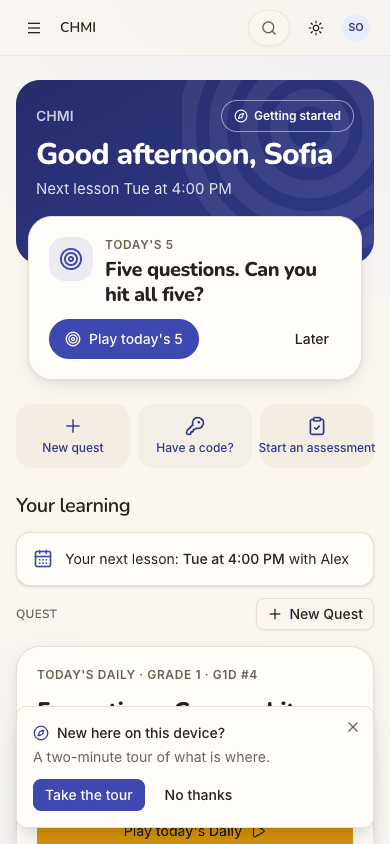
step 3
Step 5, the first question. "G3D #4 · Grade 3": what the 2 means in 6 × 2 = 12. That is a third-grade question
for a seventh-grader working towards AoPS Prealgebra. The screen also has no way out: no close, back or home control.
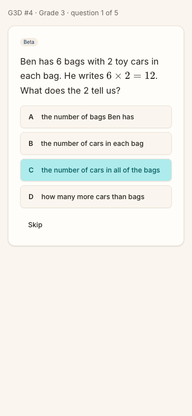
step 5
Step 14, after a reload. She chose 7 on the grade row at step 13, and the board became hers. One reload later
it is back on "Grade 1 · G1D #4". She will have to find the 7 again on every visit.
Her practice starts at Grade 1 or 3, though the space has her in Grade 7
Issue
CHMI knows Sofia's grade. Her profile shows "CURRENT COURSE Grade 7 Mathematics" and "GOAL THIS YEAR Ready for AoPS Prealgebra by the start of next school year" (step 15). But every practice the home offers starts far below that:
the Next up Daily is Grade 3 (step 5);
the Quest board's Daily and its grade row are on Grade 1;
"More levels" offers Math 1 and Kindergarten, and "Advanced" offers Beast Academy 1 (steps 3-4).
Her Question Quest page says "No level yet" (step 16): nobody has set her a Quest level. Choosing 7 on the grade row fixes the board: a Grade 7 Daily, five Grade 7 tiles and AoPS Algebra (step 13). But it is not kept: after a reload the board is back on Grade 1 (step 14). Where the Next up Daily's Grade 3 comes from is not shown on screen.
Violation
cuj-contract, steps 5 and 14 (expected: practice at her grade, and a grade she chose stays chosen; observed: Grade 3 and Grade 1, and her choice lost on reload); Nielsen #2 Match between system and the real world (the practice does not match the learner the space has on file); Nielsen #6 Recognition rather than recall (she must remember to re-pick 7 every visit).
Severity
Classify: the end state is wrong, and the workaround (find the 7, on every visit) fixes only half
the home. For a tutored student practising before a lesson, the content is the point. A Grade 3 question gives her nothing to bring to Tuesday. A seventh-grader who meets "6 × 2 = 12" as her "Daily" is likely not to come back. It is not a 4, because she can reach Grade 7 practice by hand.
Evidence
step 5
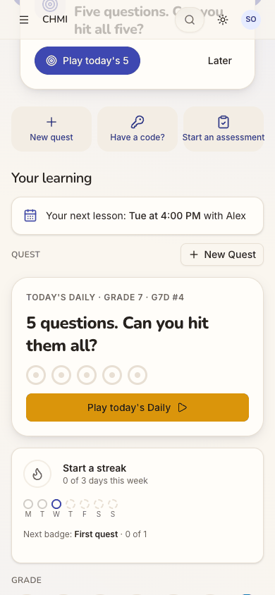
step 13step 14
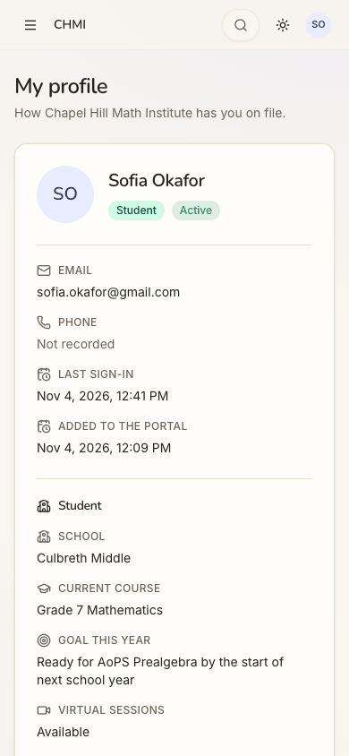
step 15 Repro: sign in as Sofia (CHMI student, no Quest level). The board reads "Today's Daily · Grade 1", and Next up's "Play today's 5" opens /quest/daily/NC26.3 ("Grade 3"). Tap 7 on the grade row: the board becomes Grade 7. Reload: it is Grade 1 again.
Fix
Lead the Quest board, its Daily and the Next up Daily from one learner level. Use her Quest level if one is set.
Otherwise use the last grade she chose on the row, kept per member (the guest home already keeps a grade on the device; guestLeadLevel).
Until either exists, ask once, on the board: "Which grade are you in?". Owner decision: whether a tutoring
space's "Current course" may suggest the answer, since it is free text today.
On the tutor's and the office's home, flag "Sofia has no Quest level". Alex can then set it in one step.
Add a web e2e check: a student picks grade 7, reloads, and the board and Next up are both on Grade 7.
sev2
One home, two different Dailies under two names
Issue
Sofia's home offers "today's" practice twice. The Next up card calls it "Today's 5", and its link opens "G3D #4 · Grade 3" (step 5). The Quest board's card below calls it "Today's Daily · Grade 1 · G1D #4". Its button opens a different set, "G1D #4 · Grade 1" (step 12). When she picks 7 on the grade row, the board's Daily becomes Grade 7. Next up still links to the Grade 3 set (step 13). So the biggest button on the page is the one that ignores her choice. The board's card reads "5 questions. Can you hit them all?". Next up reads "Five questions. Can you hit all five?". The same idea, worded twice.
Violation
cuj-contract, steps 12-13 (expected: one Daily for her today; observed: two, at two grades, and Next up does not follow the grade row); Nielsen #4 Consistency and standards; Nielsen #1 Visibility of system status (nothing says which one counts for the streak or the rings).
Severity
Classify: an observable mismatch and real friction. For C5, "What do I have to do?" should have one
answer. Two "today's" sets leave her guessing which one her streak and her tutor see. She can play either, so nothing is blocked.
Evidence
step 5
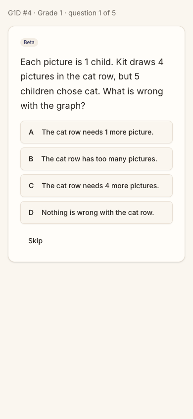
step 12step 13 Repro: on Sofia's home, open Next up's "Play today's 5": Grade 3. Back. Open the board's "Play today's Daily": Grade 1. Back. Pick 7 on the grade row: the board says Grade 7, and Next up's link is still /quest/daily/NC26.3.
Fix
Give a reader one Daily per day, at the level the board shows. Next up's Daily item should take its level from the same source as the board, and change when the grade row changes. While Next up shows the Daily, the board's Daily card should repeat it, or make way for the rings. Use one name everywhere: "Today's Daily" (the board's), with the grade in its label, e.g. "Today's Daily · Grade 7".
sev2
Six days before her lesson, nothing on the home is about it
Issue
The band says "Next lesson Tue at 4:00 PM", and "Your learning" repeats it: "Your next lesson: Tue at 4:00 PM with Alex" (step 3). That is all. Tapping the line does nothing, because it is plain text (step 11). Nothing on the home says what the lesson will cover, what homework was set, or what to practise for it. "Practise before Tue's lesson" is the Next up item made for this cohort. It is offered only within three days of the lesson (PRACTISE_BEFORE_DAYS), so on Wednesday it is absent, with nothing in its place. Looking further, she tries the menu's Quest (step 16): Question Quest, also unrelated to her lesson. Both are dead ends.
Violation
cuj-contract, step 11 (expected: a way from the lesson to practice for it; observed: an inert line); Nielsen #1 Visibility of system status; Nielsen #6 Recognition rather than recall (the lesson's homework lives elsewhere, if she can find it).
Severity
Classify: real friction for the journey's own goal. Sofia came to practise for Tuesday, and the home
knows the lesson but does nothing with it for four days of every week. She can still practise; it just is not tied to the lesson. Two dead ends follow from it.
Evidence
step 11
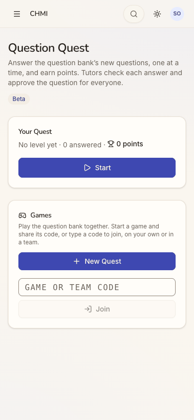
step 16 Repro: as Sofia on a Wednesday, tap "Your next lesson: Tue at 4:00 PM with Alex". Nothing happens. Next up is "Today's 5"; no "Practise before" appears anywhere.
Fix
Make the lesson line a link to that lesson, with its time, place and tutor, and the homework set at the last lesson
(the "homework set" part of the write-up, which already reaches the lesson's audience).
Give the line a quiet action every day: "Practise for Tuesday". Next up's "Practise before Tue's lesson" can keep
its three-day window as the louder nudge.
When the Next up item does appear, it should open practice at her level (see the sev3 finding), so its first
question fits her.
sev2
The Daily has no way out but the browser's Back
Issue
The Daily runs full screen. Its only parts are a line ("G3D #4 · Grade 3 · question 1 of 5"), the question, four answers and Skip (step 5). There is no close, back, home or menu control. Sofia left with the browser's Back (step 6). Nothing told her whether leaving would cost her today's Daily. The home afterwards still offered it unplayed, so in this run nothing was lost.
Violation
cuj-contract, step 6 (expected: an in-app way back; observed: none); Nielsen #3 User control and freedom; Nielsen #1 Visibility of system status (what leaving keeps is not said).
Severity
Classify: a workaround is needed, the browser's Back. That works in a browser tab. Opened as a
home-screen web app on a phone, there may be no Back to use (not tested). A student unsure whether leaving "uses up" the one Daily a day may simply not start it.
Evidence
step 5step 6 Repro: from the home, tap "Play today's 5". The accessibility tree shows a paragraph, the question, "Your answer" (A-D) and Skip, and no other control.
Fix
Add a close (X) to the Daily's top line, beside "question 1 of 5". Tapping it asks: "Leave today's Daily? It will wait for you until tomorrow." Use whatever the rule really is. Keep the same control on every full-screen quest view (/quest/daily, /quest/play, games).
sev2
A student gets the staff menu, and its Quest is a different Quest
Issue
Sofia's menu has twelve entries (step 7; the same on desktop at step 3): Home, Dashboard, Users, Pairings, Sessions, Progress, Assessment (Beta), Quest (Beta), Schedule, Billing, Comments, Activity and My profile. Most are words for running a tutoring space. None has a count or badge to say something waits for her. The one that sounds like her practice, "Quest", opens "Question Quest" (step 16). That page reads "Answer the question bank's new questions … Tutors check each answer and approve the question for everyone", with "No level yet". It is a different thing from the home's quest board. She meets five names for practice on two screens: "New quest", "New Quest", "Question Quest", "Today's 5" and "Today's Daily".
Violation
cuj-contract, steps 7 and 16 (expected: a learner's menu leading to her practice; observed: a staff menu, and a wrong turn); Nielsen #8 Aesthetic and minimalist design; Nielsen #4 Consistency and standards.
Severity
Classify: real friction, and the source of one of the run's two dead ends. A student's menu is where
she looks when the home does not answer, so it should be short and in her words. The pages behind Users, Pairings and Billing were not opened, so this finding is about the labels only.
Evidence
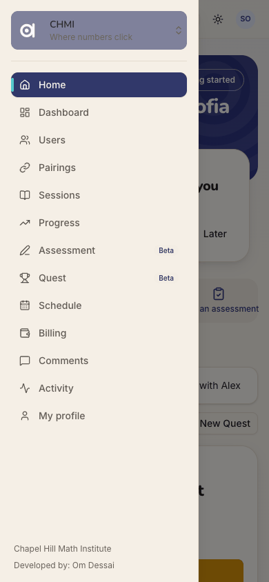
step 7step 16
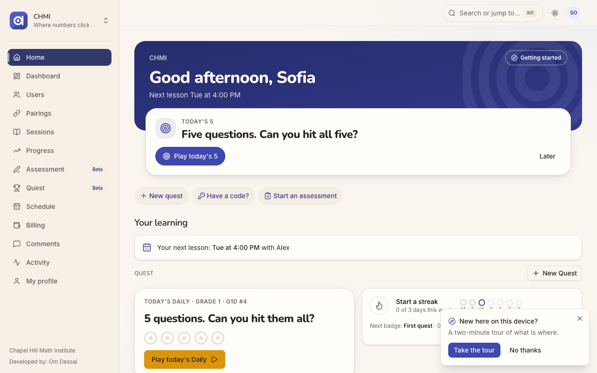
step 3 desktop Repro: as Sofia, open the menu; then tap Quest.
Fix
Give someone who holds only the student role a learner menu: Home, My lessons (sessions and schedule), Practice
(the quest board), Assessments, My profile.
Keep the staff entries for staff, and narrow by role as the dashboards already do.
Put a count on Assessments when one waits for her.
Rename "Question Quest" for students (for example "Try new questions"), so "Quest" means one thing.
sev2
"Sign in" opens a sheet titled "Sign up free"
Issue
Sofia already has an account; her centre made it. She taps the header's "Sign in" (step 2) and gets a sheet titled "Sign up free": "Keep your scores, unlock every quest and play with your family." Continue with Google. No sign-in wording appears. J05 found the same sheet; for a returning member it matters more.
Violation
cuj-contract, step 2 (expected: a sign-in step; observed: a sign-up sheet); Nielsen #4 Consistency and standards; Nielsen #2 Match between system and the real world.
Severity
Classify: an observable mismatch. It did not stop her: the one button signed her in to CHMI
(step 3). But a student told "your centre has set you up" may stop at "Sign up free", or ask a parent whether she is about to make a second account.
Evidence
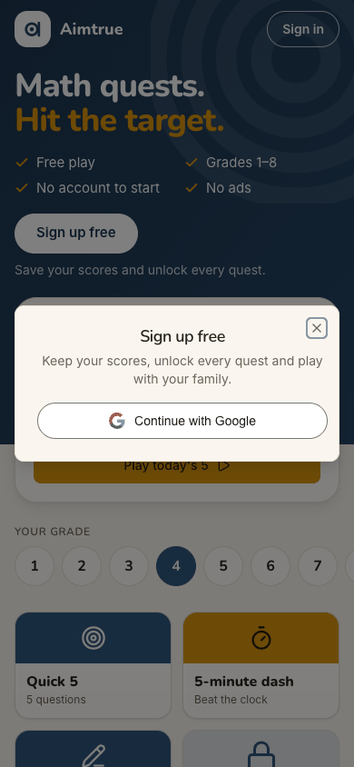
step 2 Repro: signed out at /, tap "Sign in" in the header.
Fix
Title the sheet by the button that opened it. From "Sign in": "Sign in. Welcome back. New here? The same button makes you a free account." Keep "Sign up free" for the hero, the tiles and the nudges. (Same fix as J05.)
sev1
The Assessment page talks about a student, not to her
Issue
Sofia reaches the Assessment page in one tap from the home (step 10) or two from the menu (step 8). Its words are written for the adult who gives an assessment, not for her:
"A student answers questions by hand … When it is submitted, their tutors get a PDF";
"including questions not yet reviewed in the bank (your space is trying them out)".
The Level picker is not preset to her grade. It lists 22 codes (K, G1-G8, Math 1, Math 2, Applied Logic, …, BA1-BA5, AoPS …), and every one ends "· 10 questions · includes unreviewed" (step 9). She can find G7, eighth in the list.
Violation
cuj-contract, steps 8-10 (expected: a start in her words, at her grade; observed: copy for an adult and an unpreset list of codes); Nielsen #2 Match between system and the real world.
Severity
Classify: wording and defaults, not a blocker. Starting is still one level and Start away. For a
student, "includes unreviewed" on every line reads like a warning she cannot act on.
Evidence
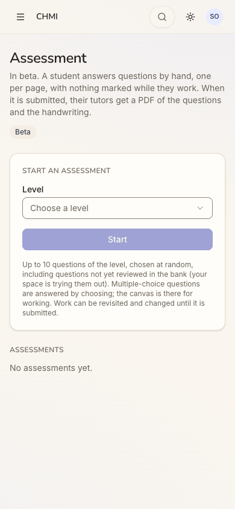
step 8
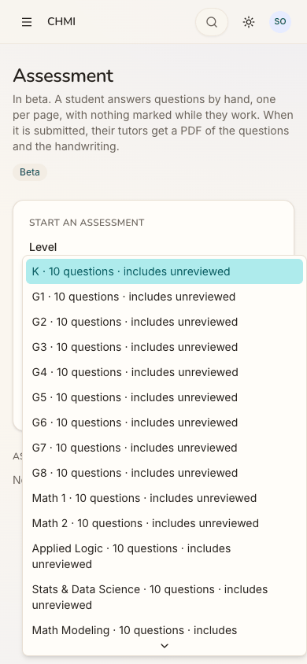
step 9 Repro: from the home tap "Start an assessment", then open Level.
Fix
When the reader is the student, address her: "Answer up to 10 questions by hand. When you hand it in, Alex gets
your work."
Preset Level to her grade (as in the sev3 fix).
Show level names ("Grade 7") rather than codes.
Say "includes new questions" once, under the picker, instead of on every option.
Walkthrough
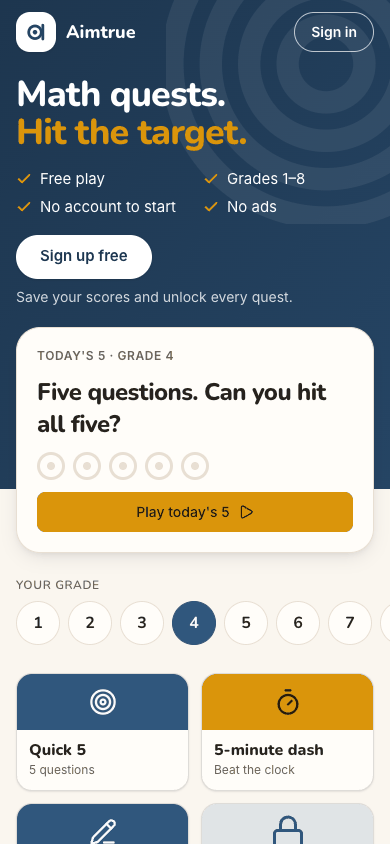
Step 1 — Open http://localhost:8797/ signed out (landing) Expected: the guest page, with a way in for someone who already has an account. Observed: match. "Math quests. Hit the target.", a big white "Sign up free", and an outlined "Sign in" in the header. Today's 5 is on Grade 4, then the grade row and the tiles. Desktop and dark render cleanly.Step 2 — Tap "Sign in" in the header Expected: a sign-in step. Observed: a sheet titled "Sign up free", "Keep your scores, unlock every quest and play with your family.", and one button, Continue with Google.Step 3 — Tap "Continue with Google" (landing: the first screen inside her space) Expected: straight into CHMI, with Next up offering practice. Observed: match on entry, with no chooser and no wizard. "Good afternoon, Sofia" and "Next lesson Tue at 4:00 PM". Next up: "Today's 5", with "Play today's 5" and "Later". Quick actions: New quest, Have a code?, Start an assessment. "Your learning" shows "Your next lesson: Tue at 4:00 PM with Alex". The Quest board starts with "Today's Daily · Grade 1". A tour offer, "New here on this device?", sits over the bottom of the board's Daily card on the phone. On desktop the sidebar lists twelve entries.
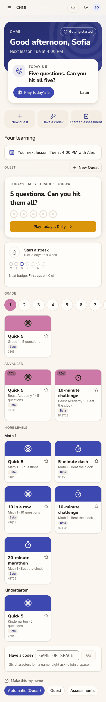
Step 4 — Tap "No thanks" on the tour offer, and look over the whole home Expected: somewhere on the home, practice for her lesson or an assessment waiting. Observed: neither. In order: - Next up and the quick actions; - the lesson line; - "Today's Daily · Grade 1 · G1D #4"; - "Start a streak, 0 of 3 days this week", with the week's dots and "Next badge: First quest · 0 of 1"; - the grade row on 1, and one Grade 1 tile; - Advanced: two Beast Academy 1 tiles; - More levels: five Math 1 tiles and one Kindergarten tile; - a code box, and "Make this my home: Automatic (Quest) / Quest / Assessments". There is no Assessments section, and no homework.Step 5 — Tap "Play today's 5" in Next up (landing: the feature starts) Expected: the Daily's first question, at her grade. Observed: the first question is on screen, so the practice has started. "G3D #4 · Grade 3 · question 1 of 5", Beta: "Ben has 6 bags with 2 toy cars in each bag. He writes 6 × 2 = 12. What does the 2 tell us?", A-D and Skip. There is no close or back control. The cyan on C in the phone images is the pointer's hover where the link had been, not a choice.Step 6 — Go back with the browser's Back Expected: an in-app way out, and the home. Observed: only the browser's Back works. The home is unchanged, and Next up still offers "Play today's 5", unplayed.Step 7 — Open the menu, looking for an assessment Expected: a short student menu, with a badge if something waits. Observed: twelve entries: Home, Dashboard, Users, Pairings, Sessions, Progress, Assessment (Beta), Quest (Beta), Schedule, Billing, Comments, Activity and My profile. None has a badge.Step 8 — Tap "Assessment" Expected: an assessment waiting for her, or a way to start one. Observed: none is waiting ("No assessments yet"). "Start an assessment" has a Level picker and a disabled Start. The page's words are about "a student" and "their tutors".Step 9 — Open the Level picker Expected: her grade first, or already chosen. Observed: 22 codes from K to AoPS Geometry, each "· 10 questions · includes unreviewed", with nothing preselected. G7 is eighth. Not started: the journey starts one practice, and that was the Daily. Escape closes the picker.Step 10 — Back to the home, then tap the quick action "Start an assessment" Expected: the assessment start, ideally at her grade. Observed: the same page as step 8, one tap from the home, with Level still unchosen. So an assessment is one tap to the page, then a level and Start.Step 11 — Back to the home, then tap "Your next lesson: Tue at 4:00 PM with Alex" Expected: the lesson, or practice for it ("Practise before Tue's lesson"). Observed: nothing happens; the line is plain text. No "Practise before" item is anywhere on the home. The lesson is six days away, outside the three days in which the home offers it. This is the run's first dead end.Step 12 — Tap the board's "Play today's Daily" Expected: the same Daily as Next up. Observed: a different set, "G1D #4 · Grade 1 · question 1 of 5", about a picture graph of cats.Step 13 — Back to the home, then pick 7 on the grade row Expected: her grade's Daily and tiles, with Next up following. Observed: the board becomes "Today's Daily · Grade 7 · G7D #4", with five Grade 7 tiles and AoPS Algebra under Advanced. Next up's "Play today's 5" still links to the Grade 3 Daily. When she scrolls, the translucent phone header shows the Next up card's text through it.Step 14 — Reload the home (checking the end state) Expected: grade 7 kept, the Daily still unplayed. Observed: the Daily is still unplayed and the streak is still 0 of 3. But the board is back on "Grade 1 · G1D #4": her grade choice is not kept.Step 15 — Menu, "My profile", scrolled to the student block Expected: the space has her grade on file. Observed: "How Chapel Hill Math Institute has you on file". School: Culbreth Middle. Current course: Grade 7 Mathematics. Goal this year: "Ready for AoPS Prealgebra by the start of next school year".Step 16 — Menu, "Quest", still looking for practice for her lesson Expected: her practice. Observed: "Question Quest", described as answering "the question bank's new questions" that "tutors check". It shows "No level yet · 0 answered · 0 points" and Start, then Games with New Quest and a code box. Nothing here is about her lesson. This is the run's second dead end, and the end of the journey: one practice started (the Daily, step 5), and the other two recorded (the assessment at steps 8-10, "Practise before" at step 11).
1 / 16
Appendix
Mode: live. The web app at http://localhost:8797 is a frozen copy of commit 2d6e7d3 with sign-in on, driven
in headless Chrome at 390×844 (phone), plus 1280×800 and dark mode at the landing steps (1, 3, 5). Run on Wednesday 2026-11-04, between 17:38 and 17:43 UTC.
Frameworks applied: cuj-contract (every step against its expected result); task-completion (the journey ran to
its defined end: one practice started, the other two recorded); success-criteria (the end state was checked again after a reload at step 14: still in CHMI, the Daily still unplayed, the grade choice lost).
CUJ manifest: J17, 16 steps, all observed. Steps 2, 5, 6, 11, 12, 13, 14 and 16 did not match what was expected
(findings above).
Coverage / not inspected:
"Practise before Tue's lesson" itself. It was not offered on the run's date: the lesson was six days away, and
the home offers it within three (PRACTISE_BEFORE_DAYS in packages/shared/src/home.ts). The audit changes neither the clock nor the schedule. So whether it appears from Saturday, how it reads, and which level it opens were not observed.
An assessment waiting for her. None existed: her Assessment page listed none. Next up's "continue an
assessment" item could not be seen. Starting one herself was reached (steps 8-10), but Start was not pressed.
The Daily beyond question 1 (answering, the rings, the streak, one play a day): out of scope by the audit's
rules. Whether leaving mid-Daily keeps it was judged only from the home after Back: still offered, unplayed.
The Daily without a browser Back (a home-screen web app on a phone): not tested.
Pages behind the menu. Users, Pairings, Sessions, Schedule, Billing, Dashboard, Progress, Comments and Activity
were not opened. The menu finding is about the labels only.
Prices on her profile. Her own lesson prices ($100.00/hr in person, $85.00/hr virtual) are listed on her
profile below the part shown at step 15. This was observed but not judged against docs/data-exposure.md; the exposure crawl owns that.
Question Quest's Start (no level set), New Quest, a game code, "Make this my home", "Getting started" and the tour
(declined at step 4) were not used.
Her parent's view (Maria Okafor), and whether Alex is told she has no Quest level.
Keyboard-only and screen-reader use; the accessibility tree was read only to find controls.
The iOS app; it is covered by separate journeys, and J17 has no app replay.
Other sign-in providers (not offered on the production web).
Access: through the app's real sign-in and sign-up screens; the Google provider step is simulated (a stand-in for
Google's button hands the app a local test token for the persona).
Preconditions made outside the UI: none for J17 itself. Sofia, her pairing with Alex and her Tuesday schedule are
seeded data (npm run db:reset). The run's settings were set through the console API before the journeys, as docs/userjourney/README.md "The run" records: web sign-in Google only, sign-up access Post-approved, the Play home and the Daily on, and Assessment and Quest switched on in chmi by its admin.